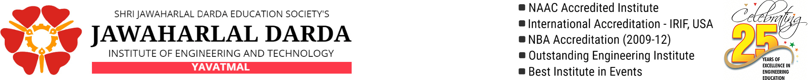
| Photo | Name of Activity | Details | Date | Attended by |
|---|---|---|---|---|
| 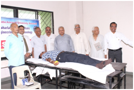 | Blood Donation Camp and Tree Plantation Programme | Blood Donation and Tree plantation Camp was organized on the occasion of Birth Anniversary of Shri Jawaharlal Darda. | 02/07/2018 | 23 Donors, NSS students and Staff of Jawaharlal Darda Education Society, Yavatmal. |
| 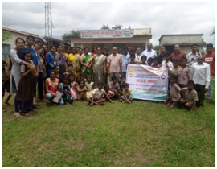 | 02 days Swachh Bharat Summer Internship program | Swachh Bharat Summer Internship program at adopted village Sonkhas dated 21st July and 22nd July, 2018 | 21/07/2018 To 22/07/2018 | NSS students and Villagers of Sonkhas. |
| 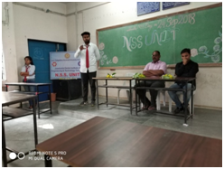 | NSS students Orientation | NSS students Orientation by Mr. Manish Kamawar (NSS Students Coordinator (2017-2018) JDIET, Yavatmal) | 24/09/2018 | NSS Departmental Staff and students |
| 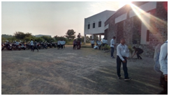 | Participation of NSS students in “Swacchta Hi Seva” | The students of NSS unit participated in a cleanliness drive as part of the Swachha BharatAbhiyan campaign in college premises. | 05/10/2018 | NSS students |
| 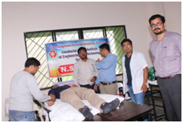 | Blood Donation Camp | Blood Donation Camp organized by NSS Unit was associated by the Doctors Team from Shri Vasantrao Naik medical college, Yavatmal. | 09/10/2018 | 126 Donors, Staff members and Students |
| 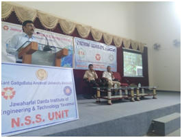 | Rashtriay Ekatmata Din | NSS unit celebrated National Unity day (also known as Rashtriya Ekta Diwas). On the occasion of Rashtriya Ekta Divas, students took pledge of National unity. | 05/10/2018 | NSS students |
| 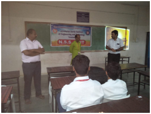 | Expert lecture on Quami Ekta Week | Institutions celebrated “Quami Ekta Week” with fervour and enthusiasm. On this occasion institute organize expert lecture of Abhijeet Dabhadkar . He stressed on the need of mutual brotherhood and communal harmony to strength the National Integration. | 05/10/2018 | Staff members and Students |
| 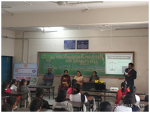 | Women Empowerment Program | Women Empowerment Program was organized by Women Cell in association with NSS unit. Advocate Miss. Mane provide the information about the laws for women . | 05/10/2018 | All students |
| 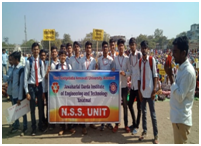 | Darubandi Rally15 Students | 15 Students participated in a rally which was held on January 18 at 12 noon on the Postal ground Yavatmal, on behalf of the Maharashtra Darubandi Sangharsh Samiti, for the demands for complete alcohol ban in the district. | 05/10/2018 | 15 NSS Students and staff |
| 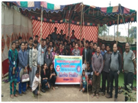 | NSS Special camp | NSS residential camp was conducted at the adopted village Sonkhas ,Talq.- Ner, District –Yavatmal. | 05/10/2018 | NSS Students and Villagers |
| 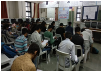 | Quize Competition | In commemoration of the 150th birth anniversary of Mahatma Gandhi, a Quiz competition on “Thoughts and Philosophy of Mahatma Gandhi” was organized by NSS Unit. | 05/10/2018 | Students |
| 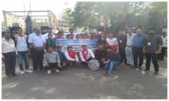 | Street Play | To create awareness among people about the importance of voting, street play was organized by NSS students at Various places in Yavatmal City. | 05/10/2018 | NSS Students. |
| 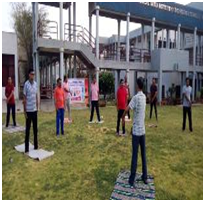 | Yoga day Celebration | International Yoga Day was celebrated with great enthusiasm. Mr Harish Tank, demonstrated various asanas followed by Omkar chanting. Warm up exercises were taken and all the staff performed sitting and standing asanas, importance of these were explained simultaneously. The celebration concluded with speech by Principal Dr. R. S. Tatwawadi. He encouraged staff to practice regular yoga to remain fit and improve concentration. Vote of thanks was presented by Prof. Anil Fendar. | 05/10/2018 | Principal Sir and Staff of JDIET |
| 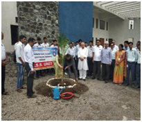 | Blood Donation Camp and Tree Plantation Programme | Blood Donation and Tree plantation Camp was organized on the occasion of Birth Anniversary of Shri Jawaharlalji Darda. | 05/10/2018 | 81 Donors, NSS students and Staff of Jawaharlal Darda Education Society, Yavatmal. |
| 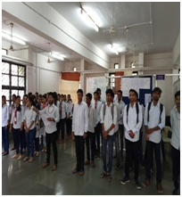 | No Tobacco Day | College observed ‘No Tobacco Day’ with much enthusiasm and fervor. A special assembly was conducted by the NSS students wherein the staff and students take “No Tobacco Pledge”. | 05/10/2018 | NSS students and staff |
| 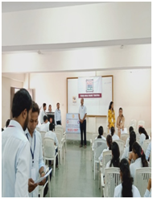 | Quiz Competition | On the occasion of Swami Vivekananda's 156th birth anniversary, students of our college in association with Young India Forum, hosted Quiz Competition. 240 Students participated in this Quiz Competition. | 05/10/2018 | 240 students participated in Quiz Competition. |
| 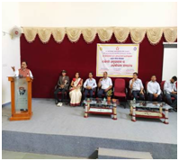 | NSS students Orientation | NSS Orientation program 2019 was organized for newly elected 150 NSS Volunteers. Dr. Rajesh Burunge (Director, National Service Scheme, SGBAU Amravati) inaugurated the program. On this occasion tree plantation was done. | 05/10/2018 | NSS Departmental Staff and NSS Volunteers. |
| 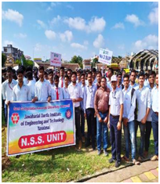 | No to Single use Plastic” Rally | On the occasion of birth anniversary of Mahatma Gandhi, NSS Volunteers participated in rally on “No to Single use Plastic” organized by Yavatmal Nagar Parishad, Yavatmal. | 05/10/2018 | NSS Departmental Staff and NSS Volunteers. |
| 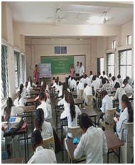 | Quiz Competition on “Right to Information Act 2005” | As a part of nation-wide celebrations of Right to Information week (6-12Oct), the NSS unit of our college organized Quiz competition with an objective to popularize and spread awareness about the Right to Information (RTI) Act 2005 among staff and students. 66 Students Participated in this Quiz Competition. Mr. Navghare distributed the prizes to the winning students. | 05/10/2018 | NSS Departmental Staff and NSS Volunteers and students. |